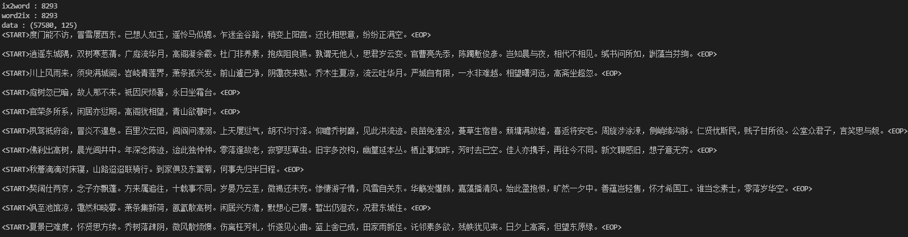
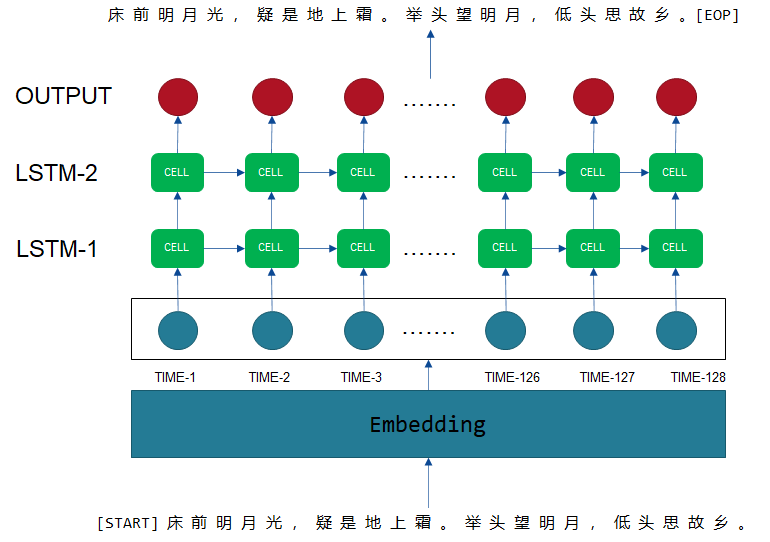
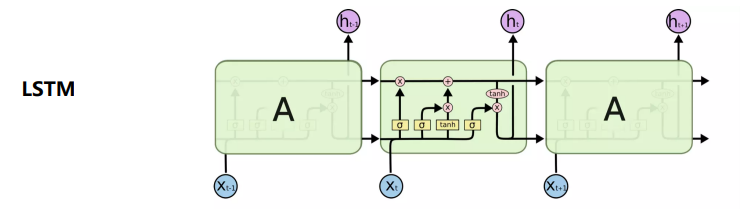
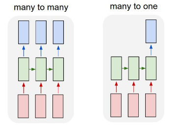
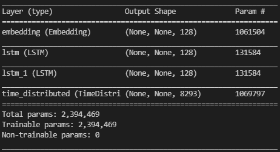
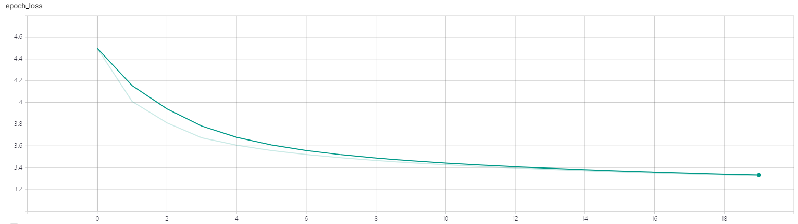
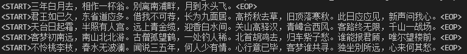

实验3：自动写诗
实验内容
数据集
实验原始数据集来自https://github.com/chinese-poetry/chinese-poetry。本次实验使用课程网站提供的预处理的数据集，含有57580首唐诗，每首诗限定在125词，不足125词的以</s>填充。数据集以npz文件形式保存，包含三个部分：
- data : 诗词数据，将诗词中的字转化为其在字典中的序号表示
- ix2word ：序号到字的映射
- word2ix：字到序号的映射

网络架构

网络架构分4层，分别是Embedding层、LSTM-1层、LSTM-2层和TimeDistributed层。
Embedding层
嵌入层Embedding的主要作用是对句子每个字进行特定维度的编码，即把每一个词都映射到高维空间。one-hot编码的向量维数十分高，而且非常稀疏，一方面计算效率低，另一方面无法体现词与词之间的关系。而Embedding编码能指定编码到特定的维数，使得每一个词不仅在高维空间能唯一表达，也能体现词与词之间的关系。在训练神经网络过程中，每个词向量都会得到更新，让Embedding层学习到词与词之间的关系。
参考1：https://www.jiqizhixin.com/articles/2019-03-27-7
参考2：李宏毅 Embedding笔记
LSTM层
长短期记忆细胞，RNN的基础单元。它由三个门控制进程细胞的信息流动，能有效解决长时间依赖问题和梯度消失等问题。

TimeDistributed层
由于本次实验RNN设计为多对多（many to many），TimeDistributed层用于在每个时间步上均操作了相同Dense。如果使用正常的Dense层，最后只会得到一个结果，即变为多对一。

参考1：https://github.com/keras-team/keras/issues/1029
参考2：https://blog.csdn.net/u012193416/article/details/79477220
参考3：https://blog.csdn.net/LaoChengZier/article/details/88706642
网络模型的代码如下。
x# 构建模型rnn_model = tf.keras.Sequential([ # 不定长度的输入 tf.keras.layers.Input((None,)), # [batch, seq_len] # 词嵌入层 '''Embedding的理解：https://www.jiqizhixin.com/articles/2019-03-27-7''' tf.keras.layers.Embedding(input_dim=settings.VOCAB_SIZE, output_dim=128), # [batch, seq_len] => [batch, seq_len, embed_dim] # 第一个LSTM层，返回序列作为下一层的输入 tf.keras.layers.LSTM(128, dropout=0.5, return_sequences=True), # [batch, seq_len, embed_dim] => [batch, seq_len, lstm1_dim] # 第二个LSTM层，返回序列作为下一层的输入 tf.keras.layers.LSTM(128, dropout=0.5, return_sequences=True), # [batch, seq_len, lstm1_dim] => [batch, seq_len, lstm2_dim] # 对每一个时间点的输出都做softmax，预测下一个词的概率 '''TimeDistributed的理解：https://blog.csdn.net/u012193416/article/details/79477220 ''' tf.keras.layers.TimeDistributed(tf.keras.layers.Dense(settings.VOCAB_SIZE, activation='softmax')), # [batch, seq_len, vocab_size] | 理解：seq_len长度的每个词的在字典(vocab)概率分布 ])# 查看模型结构rnn_model.summary()# 配置优化器和损失函数rnn_model.compile(optimizer=tf.keras.optimizers.Adam(), loss=tf.keras.losses.categorical_crossentropy)网络模型的输出和参数细节如下。

实验环境
运行依赖
Python3.8.8
- tensorflow-2.2：神经网络框架
- numpy：科学计算包
- datetime：时间管理器
- os：系统文件管理器
运行环境
GPU：GeoForce GTX 1660 Ti with Max-Q Design
实验流程
训练流程
首先将预处理的数据集中每首诗歌的
<\s>去除，保留<START>,<EOP>，然后在一个batch size （16）内计算长度最长的诗歌，接着使用<\s>其他诗歌填充到与其相同的长度。这样做的目的是为了节约每个batch size所占有的内存。（原始的长度固定为125，但是有部分诗歌长度远小于125，填充<\s>过多，浪费内存）。将诗的内容错开一位分别作为数据和标签，例如
- 输入: [START] 床 前 明 月 光 ， 疑 是 地 上 霜 。 举 头 望 明 月 ， 低 头 思 故 乡 。
- 输出: 床 前 明 月 光 ， 疑 是 地 上 霜 。 举 头 望 明 月 ， 低 头 思 故 乡 。 [EOP]
还有一点需要注意的是，标签部分使用了one-hot进行处理，而数据部分没有使用。 原因在于，数据部分准备输入词嵌入层，而词嵌入层的输入不需要进行one-hot；而标签部分，需要和模型的输出计算交叉熵，输出层的激活函数是softmax，所以标签部分也要转成相应的shape，故使用one-hot形式。
损失函数选择交叉熵损失，优化器选用Adam，学习率为0.001，其他参数默认，迭代20个epochs。
除了观察损失变化之外，由于自动写诗无法通过损失的变化来衡量模型的效果，所有在每个epoch结束后，随机生成一定数量的古诗，来主观评价的写诗的学习效果。
数据和标签制作流程代码如下。
xxxxxxxxxxclass PoetryDataGenerator: """ 古诗数据集生成器 """ def __init__(self, data, random=False): # 数据集 self.data = data # batch size self.batch_size = settings.BATCH_SIZE # 每个epoch迭代的步数 self.steps = int(math.floor(len(self.data) / self.batch_size)) # 每个epoch开始时是否随机混洗 self.random = random def __len__(self): return self.steps def sequence_padding(self, data, length=None, padding=None): """ 将给定数据填充到相同长度 :param data: 待填充数据 :param length: 填充后的长度，不传递此参数则使用data中的最大长度 :param padding: 用于填充的数据，不传递此参数则使用[PAD]的对应编号 :return: 填充后的数据 """ # 计算填充长度 if length is None: length = max(map(len, data)) # batch_size 最长的长度 # 计算填充数据 if padding is None: padding = 8292 # 开始填充 outputs = [] for line in data: padding_length = length - len(line) # 不足就进行填充 if padding_length > 0: outputs.append(np.concatenate([line, [padding] * padding_length])) # 超过就进行截断 else: outputs.append(line[:length]) return np.array(outputs) def __iter__(self): total = len(self.data) # 是否随机混洗 if self.random: np.random.shuffle(self.data) # 迭代一个epoch，每次yield一个batch for start in range(0, total, self.batch_size): end = min(start + self.batch_size, total) batch_data = self.data[start:end] # 填充为相同长度 batch_data = self.sequence_padding(batch_data) # print(batch_data, batch_data.shape) # yield x,y ''' 将诗的内容错开一位分别作为数据和标签 example: 输入: [START] 床 前 明 月 光 ， 疑 是 地 上 霜 。 举 头 望 明 月 ， 低 头 思 故 乡 。 输出: 床 前 明 月 光 ， 疑 是 地 上 霜 。 举 头 望 明 月 ， 低 头 思 故 乡 。 [EOP] 还有一点不同的是，标签部分使用了one-hot进行处理，而数据部分没有使用。 原因在于，数据部分准备输入词嵌入层，而词嵌入层的输入不需要进行one-hot；而标签部分，需要和模型的输出计算交叉熵，输出层的激活函数是softmax，所以标签部分也要转成相应的shape，故使用one-hot形式。 ''' yield batch_data[:, :-1], tf.one_hot(batch_data[:, 1:], settings.VOCAB_SIZE) del batch_data def for_fit(self): """ 创建一个生成器，用于训练 写成生成器的形式，主要出于内存方面的考虑。 训练时需要对数据进行填充、转one-hot形式等操作，会占用较多内存。 如果提前对全部数据都进行处理，内存可能会溢出。而以生成器的形式，可以只在要进行训练的时候，处理相应batch size的数据即可。 """ # 死循环，当数据训练一个epoch之后，重新迭代数据 while True: # 委托生成器 yield from self.__iter__()预测流程
- 初始化起始字符串
<START>作为模型输入，模型预测下一个字（不包含<START>,</s>的概率）。 - 将预测的字和上一个字拼接，作为新的模型输入，模型再接着预测下一个字。
- 重复2过程，直到遇到
<EOP>结束符或者达到最大诗歌长度阈值（64）。
本次实验实现两种方式的诗歌生成，分别是随机诗句和藏头诗，代码如下。
xxxxxxxxxxdef generate_random_poetry(word2ix, ix2word, model, s=settings.START_FLAG): ''' 随机生成一首诗 :param word2ix: 文字映射序号 :param ix2word: 序号映射文本 :param model: 用于生成古诗的模型 :param s: 用于生成古诗的起始字符串，默认为空串 :return: 一个字符串，表示一首古诗 ''' # 将初始字符串转成token if s != settings.START_FLAG: token_ids = [settings.START_FLAG, s] else: token_ids = [s] while len(token_ids) < settings.MAX_LEN: # 进行预测，只保留第一个样例（我们输入的样例数只有1）的、最后一个token的预测的、不包含[START] </s>的概率分布 # _probas = model.predict([token_ids, ]) # (1, seq_len, 8293) _probas = model.predict([token_ids, ])[0, -1, :-1] # (8292, ) # print(_probas) # 按照出现概率，对所有token倒序排列，取前100 p_args = _probas.argsort()[::-1][:100] # 排列后的概率顺序 p = _probas[p_args] # 先对概率归一 p = p / sum(p) # 再按照预测出的概率，随机选择一个词作为预测结果 target_index = np.random.choice(len(p), p=p) target = p_args[target_index] # 保存 token_ids.append(target) if target == settings.EOP_FLAG: break # print(token_ids) # 解码诗句 poetry = '' for i in token_ids: poetry_word = ix2word.item()[i] # loaded_dict，使用.item（）方法访问字典。 poetry += poetry_word return poetrydef generate_acrostic(word2ix, ix2word, model, head): ''' 随机生成一首藏头诗 :param word2ix: 文字映射序号 :param ix2word: 序号映射文本 :param model: 用于生成古诗的模型 :param head: 藏头诗的头 :return: 一个字符串，表示一首古诗 ''' # 使用空串初始化token_ids，加入[START] token_ids = [settings.START_FLAG] # 标点符号，这里简单的只把逗号和句号作为标点 punctuation_ids = [settings.COMMA_FLAT, settings.FULL_STOP_FLAT] # 缓存生成的诗的list poetry = [] # 对于藏头诗中的每一个字，都生成一个短句 for ch in head: # 先记录下这个字 poetry.append(ch) # 将藏头诗的字符转成token id token_id = word2ix.item()[ch] # 加入到列表中去 token_ids.append(token_id) # 开始生成一个短句 while True: # 进行预测，只保留第一个样例（我们输入的样例数只有1）的、最后一个token的预测的、不包含[START] </s>的概率分布 _probas = model.predict([token_ids, ])[0, -1, :-1] # 按照出现概率，对所有token倒序排列，取前100 p_args = _probas.argsort()[::-1][:100] # 排列后的概率顺序 p = _probas[p_args] # 先对概率归一 p = p / sum(p) # 再按照预测出的概率，随机选择一个词作为预测结果 target_index = np.random.choice(len(p), p=p) target = p_args[target_index] # 保存 token_ids.append(target) # 只有不是特殊字符时，才保存到poetry里面去 if target < 8290: poetry.append(ix2word.item()[target]) # print(poetry) if target in punctuation_ids: break return ''.join(poetry)实验结果
损失变化

20epochs内，损失的变化情况如上图所示，最终的损失降为3.325。
随机诗句生成
随机生成5首诗歌，效果如下。

藏头诗生成
以金榜题名为藏头，写5首藏头诗，效果如下。

虽然诗歌的词语表达的连贯性和通达性不够完美，但是其在句式上是正确的，部分的诗句还是有一定的唐诗风范，说明网络有一定的学习到诗歌的句式和意境。